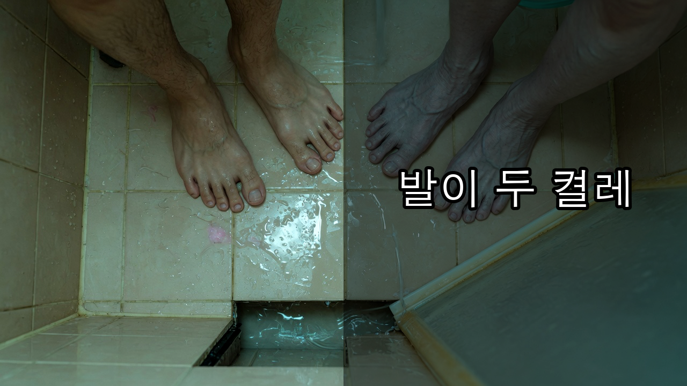
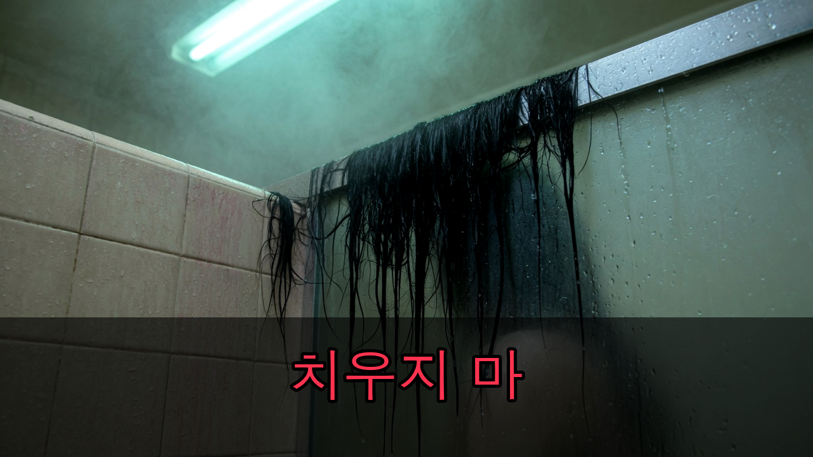

YouTube Long-form Publishing Kit
고시원 공용 샤워실, 칸막이 아래 발이 두 켤레였다
약 7분 21초 · 1920×1080 · 60fps · 창작 귀신 공포
1. 메인 제목
고시원 샤워실 칸막이 아래, 발이 두 켤레였다
2. 추천 제목 5가지
고시원 공용 샤워실, 젖은 슬리퍼가 있으면 들어가지 마라 | 창작 괴담
가운데 칸 보일러가 혼자 켜지면 씻지 마세요
자기 거 아닌 회색 슬리퍼는 치우지 마라
칸막이 아래 발이 나와 같은 방향을 보고 있었다
삼백칠 호가 공용 샤워실에서 나오면 안 되는 이유
3. 썸네일 2종

A안 · 칸막이 아래 두 켤레

B안 · 가운데 칸 머리카락
4. 설명란
샤워실 칸막이 아래에 발이 두 켤레였습니다. 그런데 그 칸에는 나만 들어가 있었습니다. 역 앞 고시원 삼백칠 호. 야간 물류를 마치고 돌아온 공용 샤워실에는 쓰지 말라는 가운데 칸이 있었습니다. 보일러는 혼자 켜지고, 회색 슬리퍼는 배수구 쪽으로 흐르지 않는 물을 떨어뜨렸습니다. 관리인은 치우지 말라고 했습니다. 나는 문을 잠갔습니다. 그리고 칸막이 아래에서 나와 같은 방향을 보는 발을 봤습니다. ⏱ 타임스탬프 00:00 칸막이 아래 두 켤레 00:06 삼백칠 호와 가운데 칸 00:49 맨발 자국과 혼자 켜진 보일러 01:25 관리인 단톡 01:56 김 서린 거울 02:54 같은 방향의 발 03:20 얼굴 없는 머리카락 03:37 삼백칠 호 04:28 방 앞의 회색 슬리퍼 05:00 열면 물이 먼저 나와요 05:56 새 삼백칠 호의 사진 06:52 새 집 문 아래 이 작품은 실존 인물·고시원·사건과 무관한 창작 공포 픽션입니다. #공포괴담 #무서운이야기 #고시원괴담 #귀신이야기 #창작괴담
5. 태그
공포괴담, 무서운이야기, 고시원괴담, 샤워실괴담, 귀신이야기, 도시괴담, 한국괴담, 심야괴담, 창작괴담, 공포오디오드라마, 잠들기전무서운이야기, 주거괴담, horror story korean
6. 고정 댓글
공용 샤워실 앞에 자기 것이 아닌 젖은 슬리퍼가 있다면, 여러분은 문을 열겠습니까? 가장 소름 돋았던 장면의 타임스탬프도 함께 남겨주세요. 제보나 각색 희망 사연은 채널 커뮤니티로 보내 주세요.
7. SNS 홍보 문구
X
샤워실 칸막이 아래에 발이 두 켤레였다. 그런데 그 칸에는 나만 들어가 있었다. ▶ [유튜브 링크] #공포괴담 #고시원괴담
Threads
자기 거 아닌 젖은 슬리퍼가 칸 앞에 있으면 들어가지 마세요. 보일러는 혼자 켜져 있었습니다. 칸막이 아래 발은 나와 같은 방향을 보고 있었습니다. ▶ [유튜브 링크]
Instagram
고시원 공용 샤워실. 가운데 칸은 쓰지 말라는 종이. 회색 슬리퍼는 치우지 말라는 단톡. 칸막이 아래에 발이 두 켤레였습니다. 전체 이야기는 프로필 링크에서 확인하세요. #공포괴담 #무서운이야기 #고시원괴담 #귀신이야기
8. 업로드 설정
- 카테고리: 엔터테인먼트
- 작품 성격: 창작 귀신 공포
- 자막:
captions.srt/captions.vtt업로드 - 재생목록: 공포괴담 본편 · 귀신 괴담 · 주거 괴담
- 엔드스크린: 텐트 밖에서 친구 목소리를 흉내 내는 것 또는 공포괴담 본편
- 쇼츠: 업로드 후 관련 동영상으로 이 본편을 지정
9. 게시 최적화 시간
본편: 2026년 9월 2일 수요일 22:00 KST
쇼츠는 본편 공개 45분 뒤인 22:45 KST에 공개합니다.